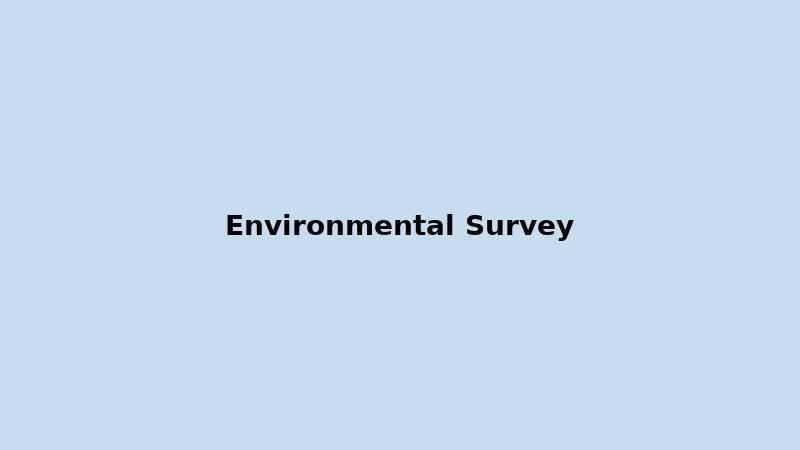

Environment
The Stewart area was selected for its relatively low environmental impact. Stewart’s Bear River is a naturally low-productivity salmon habitat, and surveys indicate minimal sea life below the tideline at Marmot Bay. The seabed is primarily rock, gravel, and sediment, making permitting easier.
